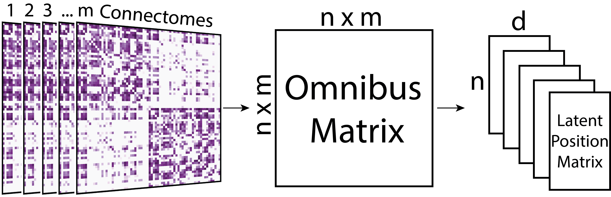
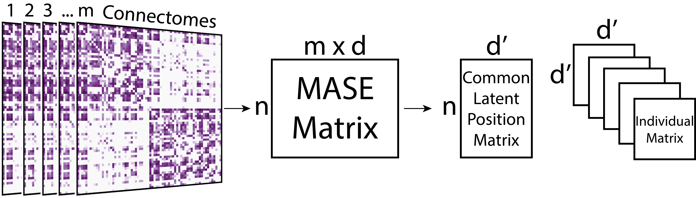

name:opening **Connectal Coding: Discovering the Mechanism Linking Cognitive Phenotypes to Individual Histories**<br> Joshua Vogelstein | {[BME](https://www.bme.jhu.edu/),[CIS](http://cis.jhu.edu/), [KNDI](http://kavlijhu.org/)}@[JHU](https://www.jhu.edu/) <a href="https://neurodata.io"><img src="images/neurodata_purple.png" style="height:430px;"/></a> <!-- <img src="images/funding/jhu_bme_blue.png" STYLE="HEIGHT:95px;"/> --> <!-- <img src="images/funding/KNDI.png" STYLE="HEIGHT:95px;"/> --> <!-- <font color="grey"></font> --> .foot[[jovo@jhu.edu](mailto:j1c@jhu.edu) | <http://neurodata.io/talks> | [@neuro_data](https://twitter.com/neuro_data)] --- class: center, middle ## .center[https://neurodata.io/graspy/] --- ## Outline - Background - Example Connectomes - Connectal Coding - Applications - Discussion --- ## .k[Background] --- ### Two definitions .r[Neural (activity) coding]: inferring the relationships between neural *activity* and past, present, or future events -- .r[Connectal coding]: inferring the relationships between neural *connectivity* and past, present, or future events -- .r[events]: genetic, developmental, experiential (stimuli/behavior), traits --- ### Connectome according to jovo - .r[Network] of a brain, at a spatiotemporal precision & extent - .r[Nodes] are distinct biophysical entities - .r[Edges] indicate the presence of a connection/communication between nodes - .r[Attributes] of the network, nodes, or edges are possible -- <br> - Example nodes: cells, cellular compartment, cellular ensembles - Example edges: synapses, gap junction, fiber bundles --- ### Implications - A brain could have many .r[different] connectomes, at different times and/or resolutions - We measure properties of the brain to .r[estimate] connectomes - Those measurements can be .r[structural] or .r[functional] - Estimates are always .r[noisy] - connectomes are .r[not comprehensive], unlike genomes - nodes can be .r[abstractions], eg, all neurons type A - attributes can be .r[arbitrary], eg, distribution of synaptic vesicles --- ### Why Use Statistical Models? - Data are noisy - Inferences about population depend on model - Quantify uncertainty - Understand limitations of analyses --- ### Connectome Analysis Styles - Bag of edges - Bag of features - Bag of parameters --- ### Bag of Edges - treat each edge as independent - this completely ignores graph structure of data - Implicit model: independent edge model --- ### Examples <!-- ER image & IER image (random p_ij's) --> <!-- Model of 1 graph - for each of the 3 approaches (IE, ERGM, LSM) - define different approaches - give examples - demonstrate pro's and con's of different approaches - prob with ER: too simple - prob with IE: sometimes signal is in the nodes - prob with ERGM: j1c's thingy - prob with latent positions: less intuitive - value of latent positions: - characterize the data - model of \geq 2 graphs - correlated ER - COSIE - MRDPG - applications of multigraph models - test for equality, mouse example - test for indepedence, bear example - test for heritability - graph matching - mic drop --> <!-- - requires multiple hypothesis correction for valid tests - does anybody know a good way to correct (hint: no)? - BH: way under-conservative (false positives) - Bonferroni: way over-conservative (false negatives) --> --- ### Bag of Features - choose m features and compute them per node or graph - how do i choose m? how do i choose which features (hint: arbitrary)? - how many features are possible given a graph with n nodes (hint: many)? - does these features characterize the brain (hint: no)? - can we make causal claims using these features (hint: no)? - least well understood of the approaches, but most common --- ### Same Stats, Different Graphs <div> <img src="images/same_stats_diff_graphs.png" style="height: 400px;" align="right"/> </div> - num vertices = 12 - num edges = 21 - number of triangles = 10 - global clustering coefficient = 0.5 <br><br><br><br><br><br><br><br><br> .foot[[Chen et al.](https://link.springer.com/chapter/10.1007/978-3-030-04414-5_33)] --- ### Bag of Parameters - build a **statistical parametric model** of brain network - does it treat edges independently (hint: no)? - do we have ways of choosing model and model complexity (hint: kind of)? - do these models characterize the brain (hint: yup!)? - can we make causal claims (hint: kind of)? --- ## .k[Statistical Models of Connectomes] --- ### Independent & Identical Edges Erdos-Renyi (ER): akin to assuming a neuron's spike rate is Poisson with a fixed rate. - edges are binary - all edges independent - all edges sampled from identical distribution - only 1 parameter: prob of an edge - $\mathbb{P}[A_{i,j}] = p$ Notes - directed vs. undirected - loopy vs. no loops - Simplest random graph model - lacks sufficient complexity/descriptive power for most questions --- #### Effect Sizes are Not Ordered Correctly :( <img src="images/sim1_power_parameters.png" style="width: 750px;"/> -- <img src="images/sim1_power.png" style="height: 250px;"/> <!--- ### Independent & Identical Edges .r[Weighted] Erdos-Renyi: akin to Poisson model using a bigger bin width. - edges can take .r[any value] - edges are independent - edges are sampled from identical distribution - $\Rightarrow$ can still only be 1 parameter: expected weight of an edge Notes - directed vs. undirected - loopy vs. no loops - simplest .r[weighted] random graph model - lacks sufficient complexity/descriptive power for most questions ---> <!--- ### Independent & Identical Edge .r[Zero-Inflated] Weighted Erdos-Renyi: akin to assuming a bursty neuron, modeling both probability of burst and expected number of spikes in each burst - edges can take any value - edges are independent - edges are sampled from identical distribution - .r[2 parameters]: prob of edge, and expected weight of edge. Notes - directed vs. undirected - loopy vs. no loops - simplest sparse weighted random graph model - can provide useful/interesting description of a connectome ---> --- ### IIE Model of Drosophila Connectome <br> <img src="images/dros_er_model.png" style="width: 800px;" /> - p = 0.166 --- ### Independent Edge Model Degree Corrected Erdos-Renyi (ER) - edges are binary - edges are independent - edges are sampled from .r[different] distributions - .r[n+1 parameters]: degree correction for each node - $\mathbb{P}[A_{i,j}] = \theta_i\theta_jp$ Notes - n+1 paramers is much larger than 1 - still ignores structure --- ### IIE Model of Drosophila Connectome <br> <img src="images/dros_dcer_model.png" style="width: 800px;" /> --- ### Categorical Conditionally Independent Edge Models Stochastic Block Model (SBM): akin to assuming a neuron's are in different states, which determine Poisson rate. - edges are binary - edges are .r[conditionally] independent - each node has a class assignment - $\mathbb{P}[A_{i,j}]$ = $B$(class i, class j) Notes - directed vs. undirected - loopy vs. no loops - simplest >2 parameter model --- ## Connectome SBMs <img src="images/dros_sbm_model.png" style="width: 800px;"/> --- ### Categorical Conditionally Independent Edge Models Degree Corrected SBM - edges are binary - edges are .r[conditionally] independent - each node has a class assignment - $\mathbb{P}[A_{i,j}]$ = $\theta_i\theta_jB$(class i, class j) Notes - directed vs. undirected - loopy vs. no loops - simplest >2 parameter model --- ## Connectome SBMs <img src="images/dros_dcsbm_model.png" style="width: 800px;" /> <!--- ## Generalized SBMs Degree Corrected Stochastic Block Model (SBM) - edges are .r[weighted] - edges are conditionally independent - each node has a class assignment - P[ A(i,j) ] = B(class i, class j) is expected weight of connection Notes - directed vs. undirected - loopy vs. no loops ---> <!--- ## Generalized SBMs Zero-Inflated Weighted Stochastic Block Model (SBM) - edges are weighted - edges are conditionally independent - each node has a class assignment - P[ A(i,j) ] = is defined by a matrix of probabilities of connection, and a matrix of expected weights Notes - directed vs. undirected - loopy vs. no loops ---> --- ### Continuous Conditionally Independent Edge Models Random Dot Product Graphs (RDPG): akin to latent state models in population coding - edges are binary - edges are conditionally independent - each node has a .r[latent position in d-dimensions] - $\mathbb{P}[A_{i,j}]$ = f(latent position i, latent position j) - for example, $\mathbb{P}[A_{i,j}]$ is the dot product of latent positions Notes - directed vs. undirected - no loops is ickier - generalizes previous models --- ### Connectome RDPGs <img src="images/dros_rdpg_model.png" style="width: 750px;"/> --- ### What can we do with parameters? - Node clustering or classification - Bootstrap? --- ## Population Graph Models - Joint RDPG - Common Subspace Independent Edge Graph (COSIE) --- ### Joint Random Dot Product Graphs Intuition - All nodes have a latent position in d-dimensional space - Each graph has a latent position matrix --- ### Common Subspace Independent Edge Graph (COSIE) Intuition - Common latent position matrix shared across all graphs - Individual graphs are transformation of the common matrix --- ### Real Data Example - HNU1 Dataset - 30 subjects, 10 sessions each - Connectomes from dMRI - Fit COSIE model to the data --- ### Mapping Vertices <img src="images/HNU1-latentpositions-plot.png" style="width: 750px;" /> --- ### Mapping Graphs <img src="images/HNU1-mds123-cbpalette.png" style="width: 750px;" /> --- ### Classification of Subjects <img src="images/HNU1-classerror.png" style="width: 750px;" /> --- ## .k[Discussion] --- ## Summary and Next Steps - Connectomes are the mechanistic link: .center[.r[genotype --> phenotype]] - Extend ideas from coding theory to support these analyses - Connectomes, genetic and phenotypic data are available --- ### References - Connectal Coding [[1]](https://linkinghub.elsevier.com/retrieve/pii/S0959-4388(18)30143-0) - Description of GraSPy [[2]](https://arxiv.org/abs/1904.05329) - Statistics on RDPG [[3]](https://dl.acm.org/citation.cfm?id=3242083) - Two-sample hypothesis testing for RDPG [[4]](https://arxiv.org/abs/1403.7249) - Two-sample hypothesis testing for two random graphs [[5]](https://projecteuclid.org/euclid.bj/1489737619) - COSIE model and estimation [[6]](https://arxiv.org/abs/1906.10026) - Omnibus Embedding for JRDPG estimation [[7]](https://ieeexplore.ieee.org/document/8215766) --- ### Acknowledgements <div class="small-container"> <img src="faces/jovo.png" /> <div class="centered">Joshua Vogelstein</div> </div> <div class="small-container"> <img src="faces/jaewon.jpg" /> <div class="centered">Jaewon Chung</div> </div> <div class="small-container"> <img src="faces/ebridge.jpg"/> <div class="centered">Eric Bridgeford</div> </div> <div class="small-container"> <img src="faces/pedigo.jpg"/> <div class="centered">Ben Pedigo</div> </div> <div class="small-container"> <img src="faces/cep.png"/> <div class="centered">Carey Priebe</div> </div> <div class="small-container"> <img src="faces/randal.jpg"/> <div class="centered">Randal Burns</div> </div> <div class="small-container"> <img src="faces/mim.jpg"/> <div class="centered">Michael Miller</div> </div> <div class="small-container"> <img src="faces/dtward.jpg"/> <div class="centered">Daniel Tward</div> </div> <div class="small-container"> <img src="faces/vikram.jpg"/> <div class="centered">Vikram Chandrashekhar</div> </div> <div class="small-container"> <img src="faces/drishti.jpg"/> <div class="centered">Drishti Mannan</div> </div> <div class="small-container"> <img src="faces/jesse.jpg"/> <div class="centered">Jesse Patsolic</div> </div> <div class="small-container"> <img src="faces/falk_ben.jpg"/> <div class="centered">Benjamin Falk</div> </div> <div class="small-container"> <img src="faces/kwame.jpg"/> <div class="centered">Kwame Kutten</div> </div> <div class="small-container"> <img src="faces/perlman.jpg"/> <div class="centered">Eric Perlman</div> </div> <div class="small-container"> <img src="faces/loftus.jpg"/> <div class="centered">Alex Loftus</div> </div> <div class="small-container"> <img src="faces/bcaffo.jpg"/> <div class="centered">Brian Caffo</div> </div> <div class="small-container"> <img src="faces/minh.jpg"/> <div class="centered">Minh Tang</div> </div> <div class="small-container"> <img src="faces/avanti.jpg"/> <div class="centered">Avanti Athreya</div> </div> <div class="small-container"> <img src="faces/vince.jpg"/> <div class="centered">Vince Lyzinski</div> </div> <div class="small-container"> <img src="faces/dpmcsuss.jpg"/> <div class="centered">Daniel Sussman</div> </div> <div class="small-container"> <img src="faces/youngser.jpg"/> <div class="centered">Youngser Park</div> </div> <div class="small-container"> <img src="faces/cshen.jpg"/> <div class="centered">Cencheng Shen</div> </div> <div class="small-container"> <img src="faces/shangsi.jpg"/> <div class="centered">Shangsi Wang</div> </div> <div class="small-container"> <img src="faces/tyler.jpg"/> <div class="centered">Tyler Tomita</div> </div> <div class="small-container"> <img src="faces/james.jpg"/> <div class="centered">James Brown</div> </div> <div class="small-container"> <img src="faces/disa.jpg"/> <div class="centered">Disa Mhembere</div> </div> <div class="small-container"> <img src="faces/gkiar.jpg"/> <div class="centered">Greg Kiar</div> </div> <div class="small-container"> <img src="faces/jeremias.png"/> <div class="centered">Jeremias Sulam</div> </div> <span style="font-size:200%; color:red;">♥, 🦁, 👪, 🌎, 🌌</span> <img src="images/funding/nsf_fpo.png" STYLE="HEIGHT:95px;"/> <img src="images/funding/nih_fpo.png" STYLE="HEIGHT:95px;"/> <img src="images/funding/darpa_fpo.png" STYLE=" HEIGHT:95px;"/> <img src="images/funding/iarpa_fpo.jpg" STYLE="HEIGHT:95px;"/> <img src="images/funding/KAVLI.jpg" STYLE="HEIGHT:95px;"/> <img src="images/funding/schmidt.jpg" STYLE="HEIGHT:95px;"/> --- .center[Additional Information] --- ## Adjacency Spectral Embedding - Method for estimating parameter for RDPG model (for single graph) - $\hat{X} = UD^{1/2}$ where $U, D, V = SVD(A)$. --- ## Omnibus Embedding - Method for estimating parameters for Joint RDPG model  --- ## Multiple Adjacency Spectral Embedding (MASE) - Method for estimating parameters for COSIE model  --- ### Genotype, Phenotype, Connectotype - .r[Phenotype]: a description of an individual's properties with regard to a phenomenon of interest - .r[Genotype]: a set of genes and associated variants associated with that phenotype - .r[Connectotype]: a set of nodes, edges, and their properties that are associated with that phenotype -- <br><br> .center[Genotype --> Connectotype --> Phenotype] **Connectotypes are the implementation-level mechanisms linking genotypes to phenotypes**